Markenstrategie
Der Rendant war traditionell der Verwalter, der für Rechnungen und Kassen verantwortlich war. Er hat nicht entschieden, sondern festgehalten — vollständig, nachvollziehbar, in einer Form, die auch Jahre später noch Bestand hatte. Genau das ist die Rolle der Anwendung: Zählprotokolle, Einnahmen und Ausgaben, Kasse und Karte, Steuerbereiche, Veranstaltungen, Altbestände, Exporte und eine lückenlose Historie.
Die Marke muss deshalb nicht überzeugen, sondern beruhigen. Sie verspricht kein Wachstum, sondern Ordnung. Rendant richtet sich an ehrenamtliche Kassiere und Vorstände, die im Zweifel vor einer Mitgliederversammlung Rede und Antwort stehen müssen. Das Design arbeitet für diesen Moment.
Mehr als ein digitales Zählprotokoll. Weniger als eine Buchhaltungssuite. Rendant führt Kassen, ordnet Zahlungsarten und Steuerbereiche zu, wertet Veranstaltungen aus und erzeugt prüffähige Nachweise. Es ersetzt weder Bank, noch Steuerberatung, noch ERP.
Kontor verwaltet Menschen und Mitgliedschaften. Rendant verwaltet Finanzunterlagen und deren Nachweis. Beide teilen Zurückhaltung, typografische Disziplin und deutsche Verwaltungsklarheit — aber weder Signet noch Akzentsystem. Kontor bleibt bei seiner eigenen Marke; Rendant ist eigenständig erkennbar.
Markencharakter
Zahlen stimmen. Zustände sind eindeutig. Nichts verschwindet.
Ein Weg pro Aufgabe, in der Reihenfolge, in der real gearbeitet wird.
Die Oberfläche drängt sich nicht auf. Keine Feiern, keine Ausrufezeichen.
Verwaltungsklarheit ohne Behördenton. Kurze, direkte Sätze.
Namenshierarchie
- Rendant steht immer allein als Marke.
- Finanzverwaltung für Vereine ist die Gattungsangabe. Sie erscheint bei Erstkontakt, im Login, auf Deckblättern.
- Rendant verwendet keinen Claim. Die Oberfläche erklärt die Software durch konkrete Funktionen und Inhalte.
- Die konfigurierte Organisation bleibt Sekundärangabe: „läuft für Sportverein 1945 Untereuerheim e.V.“ — in Kopfzeile, Fußzeile oder Statusleiste, niemals im Logo.
- Der Vereinsname wird nie Teil des Signets, der Wortmarke oder des Lockups.
Drei Richtungen
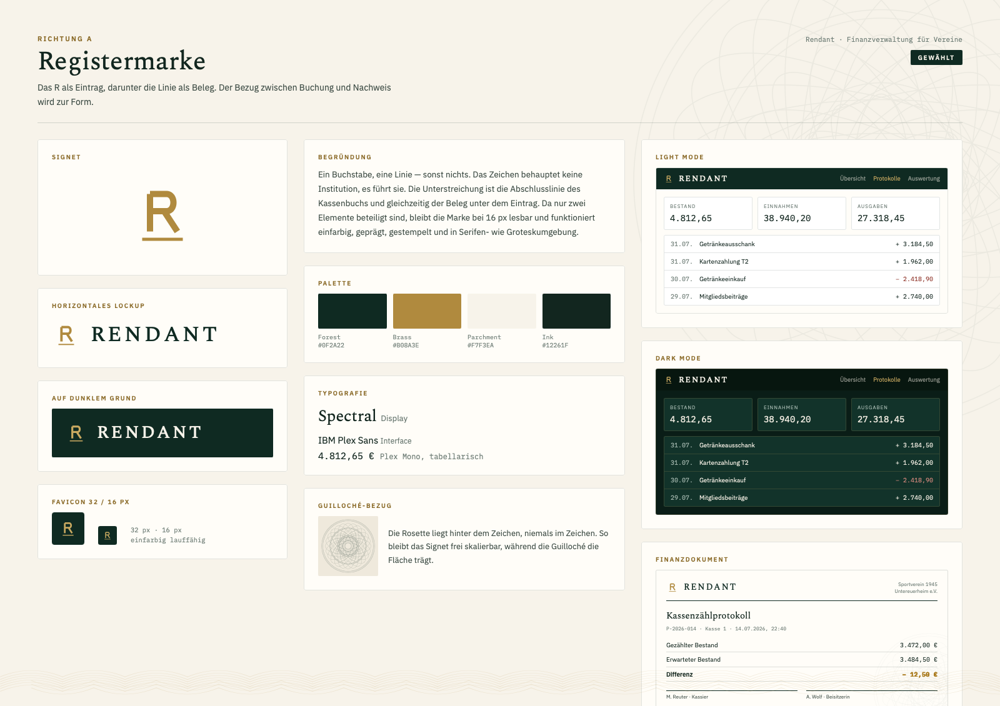
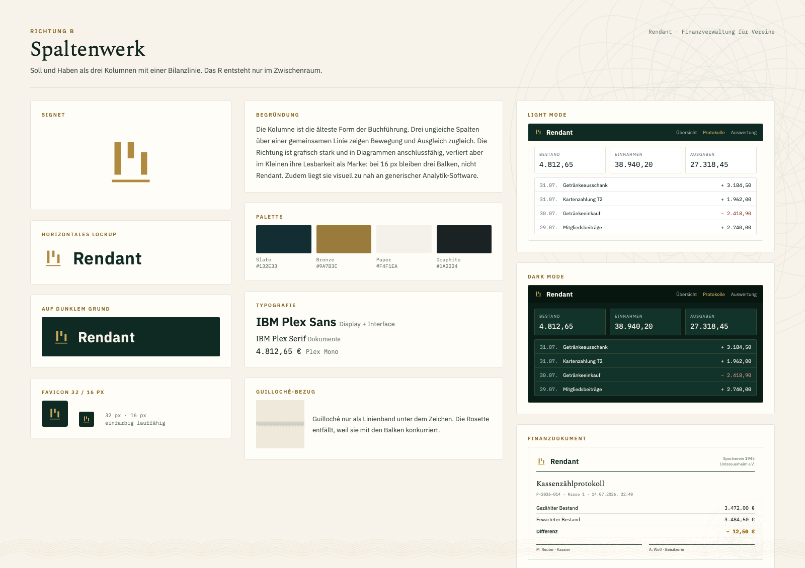
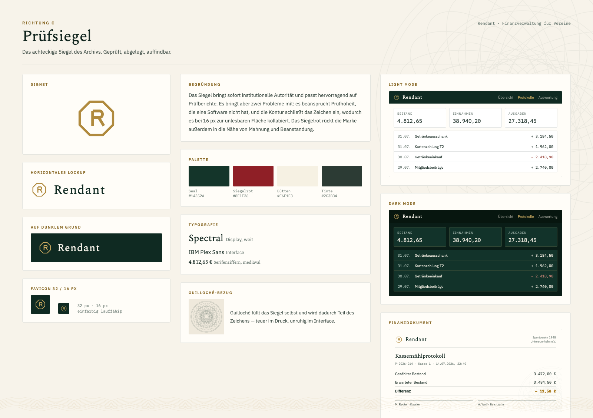
Richtungsvergleich
| Kriterium | A Registermarke | B Spaltenwerk | C Prüfsiegel |
|---|---|---|---|
| Eigenständigkeit | stark | mittel | stark |
| Lesbarkeit bei 16 px | sehr gut | schwach | schwach |
| Langlebigkeit | sehr gut | mittel | gut |
| Institutionelle Glaubwürdigkeit | gut | mittel | sehr gut, aber überzogen |
| Dark Mode | sehr gut | gut | mittel |
| Verträglichkeit mit Kontor | sehr gut | mittel | gut |
| Bezug zur Guilloché | trägt sie, ohne sie zu brauchen | konkurriert | vereinnahmt sie |
| Eignung für Dokumente | sehr gut | gut | sehr gut |
| Einfarbig / Prägung / Stempel | sehr gut | gut | schwach |
Richtung A — Registermarke. Sie ist die einzige der drei, die bei 16 px noch Rendant sagt und gleichzeitig auf einem Prüfbericht Bestand hat. Spaltenwerk ist grafisch attraktiv, kollabiert aber im Kleinen zu drei Balken und rückt die Marke in die Nähe generischer Analytik. Prüfsiegel beansprucht eine Prüfhoheit, die eine Software nicht hat, und schließt das Zeichen in eine Kontur ein, die im Interface unruhig und im Druck teuer wird. Registermarke wurde nicht wegen ihrer Dekoration gewählt, sondern weil sie die wenigsten Elemente braucht, um die Sache zu sagen: ein Eintrag und sein Beleg.
Gewählte Identität
Logosystem
| Variante | Datei | Einsatz |
|---|---|---|
| Primär horizontal | rendant-logo-primary-horizontal.svg | Standard auf hellem Grund |
| Horizontal dunkel | rendant-logo-horizontal-on-dark.svg | Forest-Flächen, Navigation, Deckblatt |
| Reversed | rendant-logo-horizontal-reversed.svg | Foto- und Volltonflächen, einfarbig hell |
| Mono dunkel | rendant-logo-horizontal-mono-dark.svg | Einfarbiger Druck, Fax, Stempel |
| Mono hell | rendant-logo-horizontal-mono-light.svg | Prägung, Gravur auf dunklem Material |
| Gestapelt | rendant-logo-stacked.svg | Quadratische Flächen, Social, Titelseiten |
| Wortmarke | rendant-wordmark.svg | Wenn das Signet bereits im Umfeld steht |
| Signet | rendant-symbol.svg | App, Favicon, Kopfzeile, Wasserzeichen |
| Signet kompakt | rendant-symbol-compact.svg | Unter 32 px, ohne Belegstrich |
| Signet klein | rendant-symbol-small-size.svg | 16–24 px, verstärkte Strichstärke |
| Outlined | svg-outlined/*.svg | Umgebungen ohne installierte Spectral |
Signetkonstruktion
| Größe | Wert | Bezug |
|---|---|---|
| Grundraster | 96 × 96 Einheiten | 1 Einheit = 1/96 der Signethöhe |
| Strichstärke Stamm | 8 Einheiten | 1/12 der Signethöhe |
| Strichstärke Belegstrich | 4 Einheiten | die Hälfte des Stamms |
| Versalhöhe R | 48 Einheiten | Oberkante 22, Grundlinie 70 |
| Bogenmitte | 44 Einheiten | Übergang Bogen zu Bein |
| Belegstrich | y = 80, x 22 bis 74 | 10 Einheiten unter der Grundlinie |
| Überstand Belegstrich | 10 Einheiten je Seite | über die Breite des R hinaus |
Der Belegstrich ist keine Unterstreichung des Buchstabens, sondern eine eigene Zeile: die Abschlusslinie unter einem Eintrag. Er ist deshalb breiter als das R und halb so stark.
Schutzraum
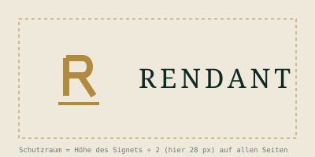
Der Schutzraum entspricht der halben Signethöhe und gilt auf allen vier Seiten. Innerhalb dieser Zone stehen weder Text noch Linien, Bildkanten oder Bedienelemente.
In dichten Oberflächen — Navigationsleiste, Tabellenkopf, Dokumentkopf — darf der Schutzraum auf ein Drittel der Signethöhe reduziert werden, sofern die Fläche selbst ruhig bleibt.
Guilloché-Linien dürfen den Schutzraum durchlaufen, solange ihre Deckkraft unter 8 % liegt. Ein Motiv darf nie so positioniert werden, dass sein Zentrum hinter dem Signet liegt.
Mindestgrößen
Ab 24 px entfällt der Belegstrich und die Strichstärke wird auf 11 bis 13 Einheiten angehoben. Dafür liegt rendant-symbol-small-size.svg bereit — kein optisches Skalieren der großen Datei.
| Anwendung | Minimum |
|---|---|
| Signet Bildschirm | 16 px Höhe |
| Signet Druck | 5 mm Höhe |
| Horizontales Lockup Bildschirm | 120 px Breite |
| Horizontales Lockup Druck | 32 mm Breite |
| Gestapeltes Logo Druck | 22 mm Breite |
| Wortmarke Bildschirm | 96 px Breite |
| Prägung / Gravur | 8 mm Signethöhe |
Unterhalb dieser Werte wird das Signet allein verwendet, nie ein verkleinertes Lockup.
Fehlanwendungen
Farbsystem
| Reihe | Wert | Verwendung |
|---|---|---|
| chart-1 | #0F2A22 | Einnahmen, Primärreihe |
| chart-2 | #B08A3E | Ausgaben, Vergleichsreihe |
| chart-3 | #2F6B4F | Zweckbetrieb |
| chart-4 | #6B7A73 | Vorjahr, Referenz |
| chart-5 | #8C5A24 | Wirtschaftl. Geschäftsbetrieb |
| chart-6 | #2C5A6B | Vermögensverwaltung |
Höchstens vier Reihen je Diagramm. Bei mehr Kategorien Balken statt Farben staffeln. Farbe nie als einzige Bedeutungsträgerin — immer Beschriftung oder Muster ergänzen.
| Rolle | Light | Dark |
|---|---|---|
| Grund | #F7F3EA | #0A1D17 |
| Fläche | #FFFFFF | #12332A |
| Fläche erhöht | #EFE9DC | #174034 |
| Text | #12261F | #F2EDE2 |
| Text sekundär | #3C4B44 | #A6B9B0 |
| Akzent | #8A6A28 | #C9A960 |
| Linie | rgba(15,42,34,.12) | rgba(201,169,96,.18) |
| Navigation | #0F2A22 | #07160F |
| Guilloché | 7,5 % | 11 % |
| Kombination | Vordergrund | Hintergrund | Verhältnis | WCAG |
|---|---|---|---|---|
| Text auf Parchment | #12261F | #F7F3EA | 14.34 : 1 | AAA |
| Muted auf Parchment | #3C4B44 | #F7F3EA | 8.31 : 1 | AAA |
| Faint auf Parchment | #6B7A73 | #F7F3EA | 4.07 : 1 | AA Large |
| Parchment auf Forest | #F7F3EA | #0F2A22 | 13.8 : 1 | AAA |
| Brass-light auf Forest | #C9A960 | #0F2A22 | 6.79 : 1 | AA |
| Brass-dark auf Parchment | #8A6A28 | #F7F3EA | 4.54 : 1 | AA |
| Brass auf Parchment | #B08A3E | #F7F3EA | 2.89 : 1 | Nicht bestanden |
| Dark text auf Dark bg | #F2EDE2 | #0A1D17 | 14.98 : 1 | AAA |
| Dark muted auf Dark surface | #A6B9B0 | #12332A | 6.65 : 1 | AA |
| Accent auf Dark surface | #C9A960 | #12332A | 6.09 : 1 | AA |
| Danger auf Parchment | #8C2F24 | #F7F3EA | 7.44 : 1 | AAA |
| Success auf Parchment | #2F6B4F | #F7F3EA | 5.68 : 1 | AA |
Typografie
Spectral ist eine Transitional-Serif mit ruhigem, dokumentarischem Duktus und vollständigen deutschen Diakritika. Sie wird nur für Überschriften, Titel und die Wortmarke verwendet — nie für Fließtext in der Anwendung.
38.940,20 €
− 2.418,90 €
Alle Beträge, Belegnummern und Zeitstempel stehen in Plex Mono mit font-variant-numeric: tabular-nums lining-nums, rechtsbündig. Negative Beträge mit typografischem Minus (−, U+2212), nie mit Bindestrich. Tausendertrennung Punkt, Dezimaltrennung Komma, Währungszeichen mit geschütztem Leerzeichen.
| Stufe | Familie | Größe / Zeile | Laufweite |
|---|---|---|---|
| Display 1 | Spectral 500 | 60 / 60 px | 0.14 em, Versalien |
| Display 2 | Spectral 400 | 46 / 52 px | 0 |
| H1 | Spectral 400 | 32 / 38 px | 0 |
| H2 | Spectral 500 | 24 / 30 px | 0 |
| H3 | Plex Sans 600 | 18 / 24 px | 0 |
| Fließtext | Plex Sans 400 | 15 / 24 px | 0 |
| Klein | Plex Sans 400 | 13 / 20 px | 0 |
| Label | Plex Sans 600 | 11 / 11 px | 0.18 em, Versalien |
| Zahl groß | Plex Mono 500 | 28 / 31 px | −0.01 em |
| Zahl Tabelle | Plex Mono 400 | 14 / 20 px | 0 |
Spectral, IBM Plex Sans und IBM Plex Mono stehen unter der SIL Open Font License 1.1. Es liegen keine Schriftdateien im Kit — Bezugsquellen und Fallback-Stack stehen in 08-fonts/FONT-SOURCES-AND-LICENSES.md. Für die Anwendung wird Self-Hosting empfohlen, nicht die Einbindung über ein CDN.
Guilloché-System
Das Motiv entsteht aus drei Familien rotierter Ellipsen (rx 152/104/62) über fünf konzentrischen Kreisen. Alle Linien sind 0,7 px stark und ohne Füllung. Nichts daran ist dekorativ hinzugefügt — die Dichte entsteht allein aus der Rotation.
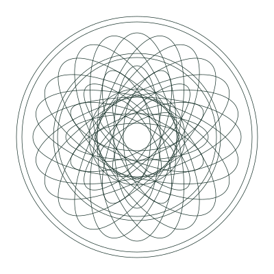
| Parameter | Wert |
|---|---|
| Deckkraft Light | 7,5 % |
| Deckkraft Dark | 11 % |
| Deckkraft Dokument | 6 % |
| Strichstärke Bildschirm | 0,7 px |
| Strichstärke Druck | 0,35 pt |
| Sicherheitszone | 96 px um Textspalten und Bedienelemente |
| Überstand über den Viewport | mindestens 180 px |
| Motive je Ansicht | höchstens zwei |
| Abschaltung | unter 900 px Breite und im Druck |
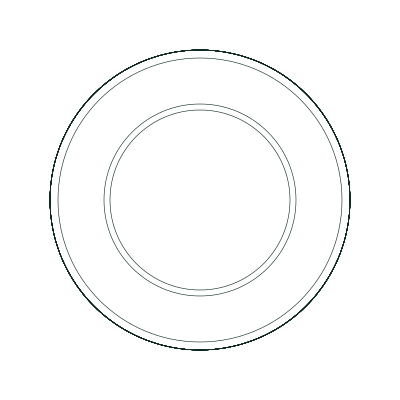
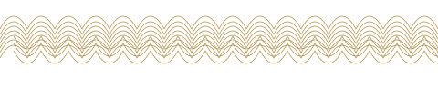
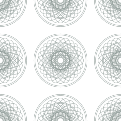
<link rel="stylesheet" href="04-guilloche/implementation/guilloche.css"> <div class="rd-guilloche-field" aria-hidden="true"> <svg class="rd-guilloche-rosette" viewBox="0 0 400 400" fill="none" stroke="currentColor">…</svg> <svg class="rd-guilloche-rosette rd-guilloche-rosette--left" …>…</svg> <svg class="rd-guilloche-ribbon" viewBox="0 0 480 96" preserveAspectRatio="none">…</svg> </div> <main class="rd-content">…</main>
Live-Demo: 09-implementation/guilloche-demo.html
UI-System
| Eigenschaft | Wert |
|---|---|
| Anwendungsgrund | --rd-bg |
| Karte | --rd-surface, 1 px Linie, 4 px Radius |
| Abgesenkt | --rd-bg-sunken |
| Schatten | level-1 für Karten, level-3 nur für Overlays |
| Erhöhung | maximal zwei Ebenen gleichzeitig |
| Eigenschaft | Wert |
|---|---|
| Primärschaltfläche | Forest-Fläche, 3 px Radius, 9/18 px |
| Sekundär | transparent, 1 px Linie |
| Eingabefeld | 1 px Linie, 3 px Radius, 10/12 px |
| Fokusring | 2 px --rd-focus, 2 px Abstand |
| Deaktiviert | 40 % Deckkraft, kein Cursorwechsel |
| Mindesttrefferfläche | 44 px auf Touch |
| Eigenschaft | Wert |
|---|---|
| Kopf | 11 px Versalien, 0.14 em, Ink Faint |
| Zeile | 11 px vertikal, 1 px Trennlinie |
| Beträge | Plex Mono, tabellarisch, rechts |
| Summenzeile | Grund abgesenkt, 600 |
| Zebra | nicht verwenden |
| Sortierung | ein aktives Kriterium sichtbar |
| Eigenschaft | Wert |
|---|---|
| Freigegeben | Erfolg, 1 px Linie, 7 % Fläche |
| Offen | Warnung |
| Storniert | Fehler, Betrag zusätzlich in Fehlerfarbe |
| Neutral | Linie stark, Text sekundär |
| Form | 2 px Radius, 11 px, 500 |
| Regel | nie nur Farbe — immer Wort |
| Eigenschaft | Wert |
|---|---|
| Leerer Zustand | Signet, ein Satz Erklärung, eine Primäraktion |
| Ladezustand | Skelettflächen in --rd-bg-sunken, keine Spinner in Tabellen |
| Fehlerzustand | Ursache, Auswirkung, nächster Schritt |
| Audit-Log | unveränderlich, immer mit Zeitstempel und Benutzer |
| Exportstatus | Bereit, In Vorbereitung, Archiviert |
| Eigenschaft | Wert |
|---|---|
| Stil | Strich, 1,5 px, quadratisches 24er Raster |
| Ecken | spitz, kein Radius |
| Füllung | keine |
| Farbe | erbt von currentColor |
| Regel | Symbol nie ohne Text in kritischen Aktionen |
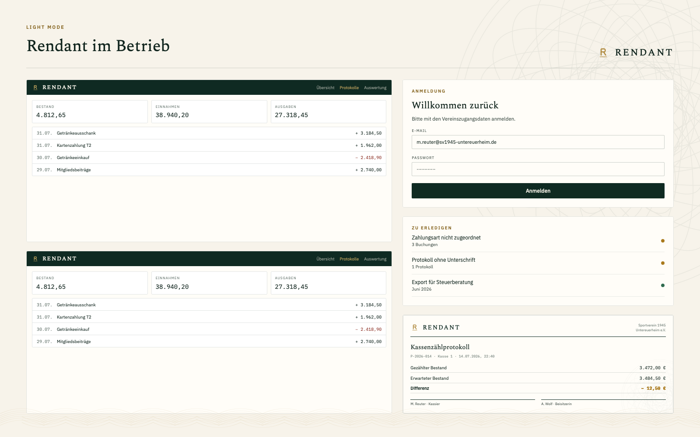
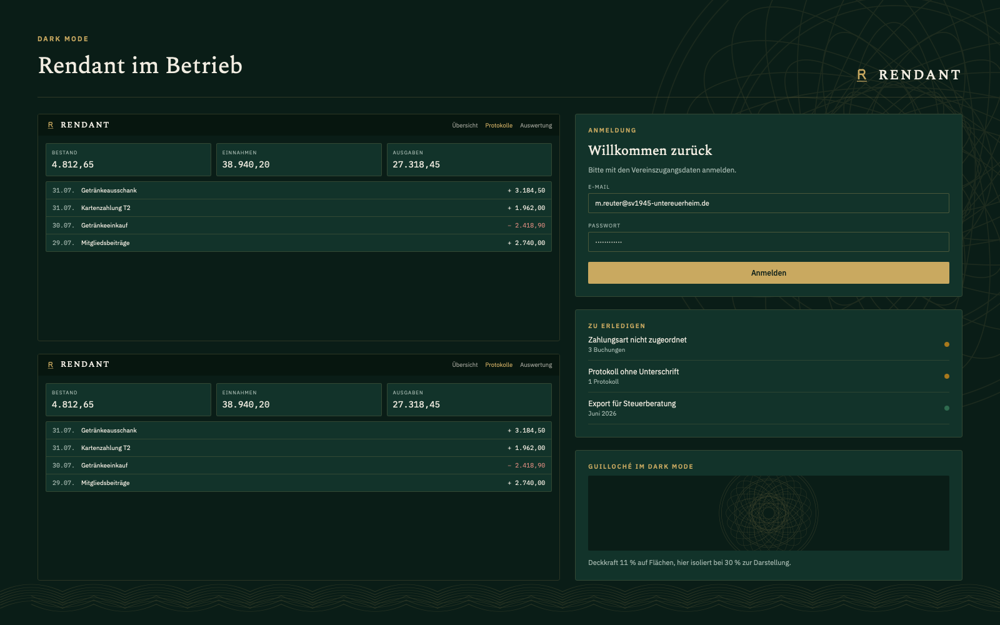
Datenvisualisierung
- Die Nulllinie beginnt immer bei null. Keine abgeschnittenen Achsen.
- Höchstens vier Reihen je Diagramm, in der Reihenfolge der Diagrammpalette.
- Beträge stehen am Balken, nicht in einer Legende, wenn Platz vorhanden ist.
- Kein Raster hinter Balken. Eine Grundlinie genügt.
- Keine 3D-Effekte, keine Verläufe, keine Kreisdiagramme über fünf Segmente.
- Guilloché läuft nie hinter einem Diagramm.
- Jede Grafik hat eine Zeitangabe und eine Einheit.
Dokumentanwendungen
Druckfertig auf A4, Wasserzeichen bei 6 %, Linienband am Fuß.
Druckfertig auf A4, Wasserzeichen bei 6 %, Linienband am Fuß.
Druckfertig auf A4, Wasserzeichen bei 6 %, Linienband am Fuß.
Druckfertig auf A4, Wasserzeichen bei 6 %, Linienband am Fuß.
| Element | Regel |
|---|---|
| Kopf | Signet 34 px, Wortmarke, Organisationsangabe rechts, 1,5 px Trennlinie in Forest |
| Titel | Spectral 25 px, darunter Metazeile in Plex Mono 10,5 px |
| Tabellen | Kopf in Versalien 8,5 px, Zeilen 0,5 pt, Summenzeile mit 1 pt Oberlinie |
| Beträge | Plex Mono, rechtsbündig, typografisches Minus |
| Wasserzeichen | Rosette unten rechts, 6 %, angeschnitten |
| Fuß | Erstellungsvermerk, Geschäftsjahr, Seitenzahl, Linienband bei 28 % |
| Unterschriften | zwei Felder mit 0,5 pt Oberlinie, Name und Funktion darunter |
| Seitenformat | A4, Satzspiegel 20 mm seitlich, 22 mm oben, 18 mm unten |
Jedes exportierte Dokument trägt Erzeugungszeitpunkt, Programmversion und Geschäftsjahr im Fuß. Belegnummern sind fortlaufend und im Audit-Log referenzierbar. Differenzen werden nicht versteckt, sondern mit Begründung ausgewiesen — ein Dokument, das eine Differenz verschweigt, ist in einer Kassenprüfung wertlos.
Stornierte Buchungen erscheinen nicht in Summen, bleiben aber im Audit-Log sichtbar. Der Prüfbericht verweist auf beide Quellen.
Responsives Verhalten
| Bereich | Mobil < 640 | Tablet 640–1024 | Desktop 1024–1600 | Breit > 1600 |
|---|---|---|---|---|
| Navigation | Tab-Leiste unten, 56 px | Kopfzeile, gekürzt | Kopfzeile vollständig | Kopfzeile vollständig |
| Inhaltsbreite | 100 % | 100 % | max. 1440 px zentriert | max. 2560 px zentriert |
| Kennzahlen | 1 Spalte | 2 Spalten | 4 Spalten | 4 Spalten, größere Ziffern |
| Tabellen | Kartenliste | horizontal scrollbar | vollständig | vollständig, mehr Spalten sichtbar |
| Guilloché | aus | eine Rosette, gedämpft | eine Rosette rechts | zwei Rosetten plus Linienband |
| Trefferflächen | 44 px | 44 px | 32 px | 32 px |
Ultra-Wide und 4K
Auf sehr breiten Bildschirmen bleibt der Inhalt zentriert und gedeckelt. Der freie Raum links und rechts gehört der Guilloché — sie füllt ihn, ohne ihn zu einer Grafikfläche zu machen.
- Die Motive sind
position: fixedund scrollen nicht mit. - Ihre Größe wächst mit der Viewport-Höhe (
clamp(720px, 78vh, 1400px)), nicht mit der Breite. - Sie ragen mindestens 180 px über den Rand, damit nie eine SVG-Kante sichtbar wird.
- Ab 1600 px erscheint das zweite, tiefer gesetzte Motiv links.
- Ab 2200 px und 3200 px werden Größe und Versatz erneut angehoben.
- Kein Motiv endet an einer senkrechten Linie. Jeder Anschnitt sieht gewollt aus.
| Datei | Maß | Einsatz |
|---|---|---|
| composition-wide.svg | 1920 × 1080 | Standard-Desktop, hell |
| composition-wide-dark.svg | 1920 × 1080 | Standard-Desktop, dunkel |
| composition-ultrawide-4k.svg | 3840 × 1620 | 4K und Ultra-Wide, hell |
| composition-ultrawide-4k-dark.svg | 3840 × 1620 | 4K und Ultra-Wide, dunkel |
Die Kompositionen sind Referenzen für die Positionierung. In der Anwendung werden die Einzelmotive per CSS platziert, nicht die fertige Komposition eingebunden — nur so bleibt das Verhalten beim Ändern der Fenstergröße stimmig.
Barrierefreiheit
- Fließtext erreicht mindestens 4,5 : 1, Überschriften ab 24 px mindestens 3 : 1.
- Der Fokusring ist 2 px stark, hat 2 px Abstand und wird nie entfernt.
- Status wird nie allein über Farbe transportiert — jedes Badge trägt ein Wort.
- Guilloché liegt hinter
aria-hidden="true"und wird von Screenreadern ignoriert. - Trefferflächen auf Touch mindestens 44 × 44 px.
- Tabellen haben
<th scope>, Beträge eine sprachlich lesbare Form imaria-label. - Bei
prefers-reduced-motionentfallen alle Übergänge. - Die Anwendung ist vollständig mit der Tastatur bedienbar; die Reihenfolge folgt der Leserichtung.
| Kombination | Verhältnis | Bewertung |
|---|---|---|
| Text auf Parchment | 14.34 : 1 | AAA |
| Muted auf Parchment | 8.31 : 1 | AAA |
| Faint auf Parchment | 4.07 : 1 | AA Large |
| Parchment auf Forest | 13.8 : 1 | AAA |
| Brass-light auf Forest | 6.79 : 1 | AA |
| Brass-dark auf Parchment | 4.54 : 1 | AA |
| Brass auf Parchment | 2.89 : 1 | Nicht bestanden |
| Dark text auf Dark bg | 14.98 : 1 | AAA |
| Dark muted auf Dark surface | 6.65 : 1 | AA |
| Accent auf Dark surface | 6.09 : 1 | AA |
| Danger auf Parchment | 7.44 : 1 | AAA |
| Success auf Parchment | 5.68 : 1 | AA |
Tonalität
Kurze, direkte deutsche Sätze. Die Anwendung meldet, was ist, und was als Nächstes zu tun ist. Sie bewertet nicht, sie beschwichtigt nicht, sie warnt nicht mit Angst.
| Nicht so | Sondern |
|---|---|
| Super! Dein Protokoll wurde erfolgreich gespeichert. | Protokoll gespeichert. |
| Achtung! Es liegt eine kritische Kassendifferenz vor! | Kassendifferenz − 12,50 €. Begründung erforderlich. |
| Ups, da ist etwas schiefgelaufen. | Import abgebrochen. Zeile 214 enthält kein Datum. |
| Jetzt Export starten und Zeit sparen! | Export ist bereit. |
| Die Zuordnung der Zahlungsart ist noch nicht final vorgenommen worden. | Zahlungsart noch nicht zugeordnet. |
| Bitte kontaktieren Sie Ihren Administrator. | Nur der Kassier kann Buchungen freigeben. |
Asset-Inventar
Vollständige, maschinenlesbare Liste mit Typ, Variante, Maßen, Farbmodus und Produktionsstatus: asset-manifest.json im Wurzelverzeichnis.
| Ordner | Inhalt |
|---|---|
| 00-preview/ | Finale Markentafel, drei Richtungstafeln, Light- und Dark-Übersicht (PNG) |
| 01-guidelines/ | Diese Richtlinie als HTML und PDF |
| 02-logo/ | Logo-SVGs, schriftunabhängige Outlined-Fassungen, transparente PNG-Exporte |
| 03-icons/ | App-Icons, PWA-Icons inkl. maskable, Favicons, favicon.ico, site.webmanifest |
| 04-guilloche/ | Rosetten, Linienband, Kompositionen bis 4K, Wasserzeichen, guilloche.css |
| 05-design-tokens/ | tokens.json, tokens.css, theme-light.css, theme-dark.css, typography.css, tokens.ts |
| 06-ui-examples/ | Zwölf Anwendungsansichten in Light und Dark, mobil bis 4K |
| 07-document-examples/ | Fünf druckfertige Dokumentbeispiele auf A4 |
| 08-fonts/ | Bezugsquellen und Lizenzhinweise — keine Schriftdateien |
| 09-implementation/ | INTEGRATION.md sowie Logo-, Guilloché- und Theme-Demo |